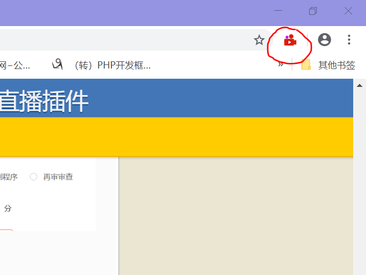
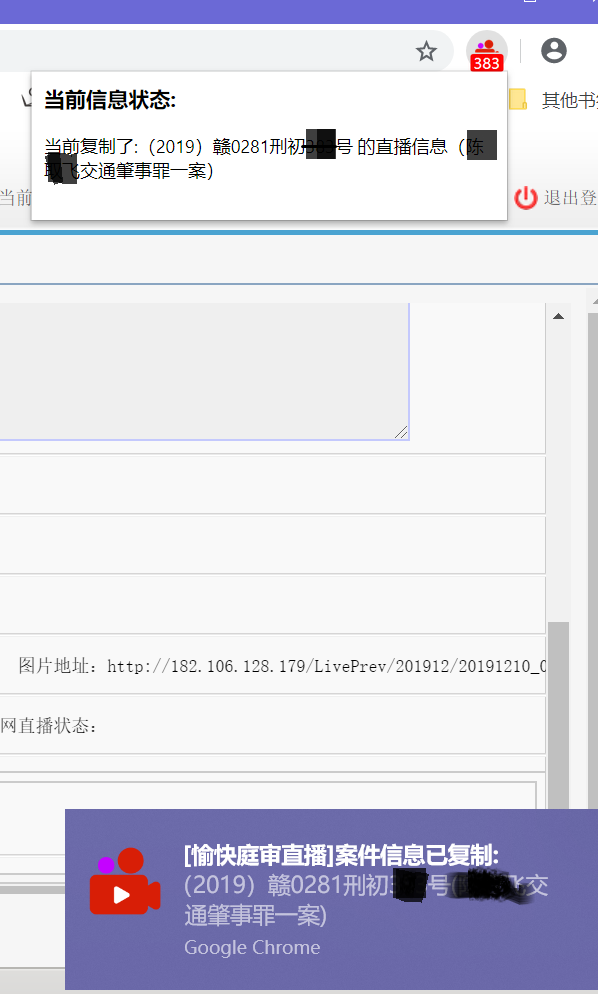

愉快庭审直播扩展使用说明
愉快庭审直播扩展使用说明
此段不重要，想轻松一下的可以[点击展开隐藏内容]
基层法院忙碌的上午，一场庭审马上又要开始了，但是。。
“辩方准备完毕老久，答辩词昨晚就看熟了，为什么还不开庭？”
“检方已准备完毕，起诉书都能脱稿了”
书记员:开启书记员系统、内网直播、外网直播、笔录模板、外网电脑复制粘贴循环，手忙脚乱中。。
院里没买一键内外网直播，流下了经费（pin）短（qiong）缺的泪水。
内外网庭审直播的操作获得了全省无数次吐槽，在某次吐槽大会上，勤劳而繁忙的技术聪哥忽然有了一个绝妙的点子，而且不差程序员（自己）。于是开工设计快捷庭审的功能。

经过数日加班和周末奋战，一款贴心的、能兼容多种主流浏览器的小扩展程序[愉快庭审直播]，终于在多个平台上线了。
以往一次庭审直播准备至少需要2分多钟的复制粘贴和校对工作，现在只需4秒钟搞定。时间减少了足足96.66%，。下面 我们来看看如何使用吧~
(1)高效 原来繁琐的重复操作现在只需最多4秒
(2)准确 避免原来的复制粘贴错误，全自动填写，极大提高正确率
(3)高适应 兼容火狐、谷歌、360及其他国产浏览器，且能适应匹配填入民事、刑事、行政案件的一审、二审、再审程序及诉讼双方。
庭审直播扩展程序使用非常简单，只要在相关页面复制粘贴即可。如下图
是不是非常简单？右键复制粘贴就会全部自动填入了。
（1）扩展安装后，右上角会有图标显示(如下图)，如果没有发现图标，多半是没有成功安装此扩展。

（2）只有在江西直播-“发布信息”页面上鼠标右击才会出现“复制案件信息”，同样只有在中国直播-“发布案件”页面，才会出现“粘贴案件信息”，其他网页不会显示。
（3）复制完毕后会出现案件已复制提示，同时右上角的图标会显示案号数字作为提示，点击会显示复制了哪个具体案子。（如下图）

那么这么好的东西要到哪里才能免费获得呢？请根据使用浏览器的不同，点击查看说明吧！